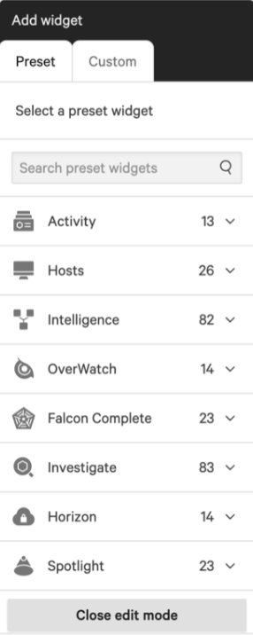
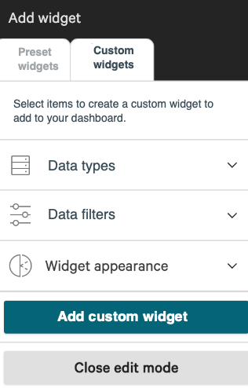

Content Designer · 2021 · CrowdStrike
Cybersecurity dashboard simplification
Simplified configuration options for creating custom widgets on a cybersecurity dashboard.
The problem
Customers struggled to create a custom dashboard widget because the menu of options was too long, making it confusing to know where to start.
What I did
To simplify the user flow, I categorized the widget options with progressive disclosure in mind. As customers made decisions in one category, the options in the other categories dynamically changed to show only relevant options. I also added instructions and clarified the meaning of the tab titles.
Feedback revealed that customers no longer struggled to create the custom widgets on their dashboards.


The outcome
The redesigned widget experience is still in use today. See it in action in this CrowdStrike blog post:
Endpoint Security – Customized Dashboards, May 2, 2024 (opens in new tab) (demo starts at 3:30)